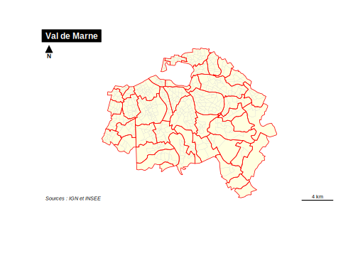
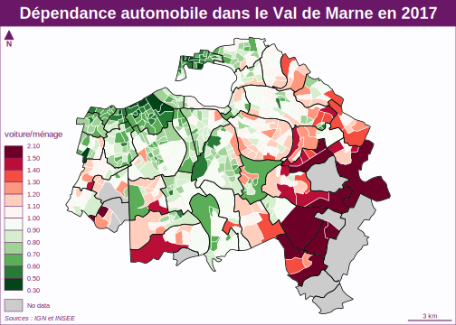

Chapitre 1 Collecte de données statistiques et spatiales
1.1 Introduction
L’objectif du projet Data Mining 2021 consistera à étudier les inégalités sociales et spatiales dans le département du Val de Marne à partir des données du dernier recensement de population de 2017. Ces inégalités seront envisagées à différentes échelles ce qui impliquera des procédures d’agrégation des fichiers détails.
1.2 Données statistiques
Nous partirons des fichiers détail de l’INSEE car, à la différence des tableaux prédéfinis, ils permettent virtuellement toutes les formes de croisement d’indicateurs. Ils sont évidemment beaucoup plus volumineux, mais ce sera justement l’occasion pour les étudiants en data mining d’être confrontés à des problèmes d’optimisation et de big data. On trouve leur description détaillée sur le site de l’INSEE dans la page consacrée au recensement :
https://www.insee.fr/fr/statistiques/4508161
Nous avons opté pour le fichier des individus localisés au canton-ou-ville qui présente une grande polyvalence d’usage puisqu’il permet de reconstituer des tableau agrégés ou l’unité de compte peut-être soit le ménage, soit l’individu selon le critère de pondération adopté.
1.2.1 Etape 1 : téléchargement des données et stockage tempioraire
Nous allons télécharger ici le fichier des données pour la région Ile-de-France au format .csv et l’enregistrer dans un dossier spécial tmp qui pourra ulétérieurement être détruit ou déplacé afin de libérer de la place
N.B. Ce programme qui prend quelques minutes sera exécuté une seule fois. On ajoutera ensuite dans l’en-tête du chunk eval=FALSE ce qui veut dire que ce bloc de code ne sera plus executé automatiquement lorsqu’on réalise un knit du document Rmd. Il sera néanmoins toujours possible de l’executer manuellement en cliquant sur sa petite flèche verte.
### Téléchargement du fichier INSEE
download.file(url="https://www.insee.fr/fr/statistiques/fichier/4802064/RP2017_INDCVIZA_csv.zip",
destfile = "tmp/indiv2017.zip")
## Decompression du fichier INSEE
unzip(zipfile = "tmp/indiv2017.zip",
exdir = "tmp")
## Examen du contenu
list.files("tmp")Nous constatons que le document zippé contenait en fait deux fichiers différents
Le fichier de données individuelles FD_INDCVIZA_2017.csv : qui pèse au bas mot 1014.3 Mo (1 Giga) et dont nous verrons par la suite qu’il comporte 4.3 millions de lignes et 88 colonnes.
Le fichier de métadonnées varmod_INDCVI_2017.csv : qui ne pèse que 1.8 Mo et comprend la description précise du label de chacune des modalités de variables.
1.2.2 Etape 2 : Transformation des données au format R
L’importation d’un tableau aussi gros (4.3 millions de lignes et 88 colonnes) donne l’occasion de faire quelques tests de vitesses sur les différents packages capables de lire des fichiers .csv.
Nous allons pour cela utiliser la fonction Sys.time()qui permet de repérer l’heure au début et à la fin d’une action. Les résultats dépendront évidemment de la vitesse de l’ordinateur. Il s’agit ici d’un MacBook Pro 2.9 Ghz, disposant de 4 coeurs et 16 Go de mémoire.
1.2.2.1 Chargement avec la fonction read.csv
- Avec la fonction
read.csvui fait partie du R-base , le temps de chargement est de 150 secondes. Le tableau résultant est de classe data.frame puisque nous avons utilisé une fonction native de R-base
1.2.2.2 Chargement avec la fonction read_csv2
- avec la fonction
read_csv2du package readr, le chargement est effectué en 59 secondes sur le même ordinateur. Le tableau résultant garde la classe data.frame mais est aussi un tibble puisque le package readr fait partie de l’écosystème tibble/tidyverse. Le temps de chrgement est donc divisé par deux.
1.2.2.3 Chargement avec la fonction fread
- avec la fonction
freaddu package data.table, le chargement est effectué en 31 secondes sur le même ordinateur.Le tableau résultant conserve la classe data.frame mais possède aussi la classe data.table puisque la fonction fread est issue de ce package. Le temps est divisé encore une fois par deux.
library(data.table)
t1<-Sys.time()
tab<-fread("tmp/FD_INDCVIZA_2017.csv")
t2<-Sys.time()
paste ("chargement effectué en",t2-t1, "secondes")
dim(tab)
class(tab)On voit donc que le temps de chargement peut différer fortement selon le choix des packages. Il en va ensuite de même pour les traitements d’agrégation des données qui seront plus ou moins rapides selon que l’on utilise les fonctions de R-base applicables à un data.frame, celles du package tidyverse applicables à un tibble ou enfin celles du package data.table applicables à un data.table.
1.2.3 Etape 3 : Sélection des données utiles et sauvegarde au format .Rdata
Nos différentes tableaux peuvent être enregistés au format interne de .R ce qui réduira considérablement leur taille par rapport au fichier texte au format csv qui pèse 1.06 Go. Nous allons également limiter la taille du document en ne conservant que les données qui nous intéressent, en l’occurence celles du département du Val de Marne.
Comme ces données bvont nous servir durant tout le projet, elles seront stockées dans le dossier data situé à l’intérieur du projet et non pas dans le dossier tmp qui sera détruit si l’on n’en a plus besoin pour libérer de la place.
- N.B. On ramène l’objet à la classe d’objet unique data.frame pour éviter des conflits possibles entre package. On pourra toujours le retransformer ensuite en data.table ou en tibble.
## Chargement avec fread (+ rapide)
tab<-fread("tmp/FD_INDCVIZA_2017.csv")
## Suppression de la classe data.table
tab<-as.data.frame(tab)
## Selection des données relatives au Val de Marne
sel <- tab %>% filter(DEPT == 94)
## Vérification des dimensions du tableau
dim(sel)
## Sauvegarde au format RDS
saveRDS(object = sel,
file = "data/indiv2017.Rdata")On peut effectuer de façon facultative une sauvegarde au format .csv ce qui évitera des problème d’ouverture du fichier .Rdata pour les personnes ayant des versions anciennes de R. Mais du coup cela engendrera un fichier très volumineux (200 Mo).
## Sauvegarde au format CSV (facultatif)
write.table(x=sel,
file = "data/indiv2017.csv",
sep=";",
dec = ".",
fileEncoding = "UTF-8")1.2.3.1 Etape 4 : Chargement et sauvegarde des méta-données
Il ne faut surtout pas oublier le fichier des métadonnées qui va permettre de recoder facilement tous les facteurs et de décoder les chiffres correspondant aux classes. On va donc le transformer au format R puis l’enregistrer également dans le dossier data.
1.3 Données géométriques
Les contours des unités spatiales correspondant aux codes de l’INSEE sont produits par l’IGN et disponibles sur le site géoservice en accès libre :
https://geoservices.ign.fr/documentation/diffusion/telechargement-donnees-libres.html
1.3.1 Etape 1 : récupération du fonds IRIS au format shapefile
La principale difficulté est de s’orienter dans l’ensemble des produits disponibles. Dans l’exemple présent, nous cherchhons le contour des IRIS, c’est-à-dire des entités infra-communales correspondant au découpage utilisé lors du recensement de 2017. Comme précédemment, nous allons stocker le résultat du téléchargement dans notre fichier tmp qui sera détruit ou déplacé lorsque nous aurons récupéré toutes les données utiles.
download.file(url="https://wxs.ign.fr/1yhlj2ehpqf3q6dt6a2y7b64/telechargement/inspire/CONTOURS-IRIS-2017-06-30%24CONTOURS-IRIS_2-1__SHP__FRA_2017-06-30/file/CONTOURS-IRIS_2-1__SHP__FRA_2017-06-30.7z",
destfile = "tmp/geom.7z")Il n’est apparemment pas possible de décompresser le fichier avec la fonction unzip de R, donc on effectue cette opération manuellement. Il en résulte une arborescence très complexe de dossiers et de sous-dossiers correspondant aux IRIS de la Francé métropolitaine mais aussi de chacun des DOM. Il faut alors aller repérer dans cet arborescence le dossier où se trouve le fonds IRIS de la France métropolitaine qui est au format shapefile et comporte plusieurs fichiers avec des extensions différentes.
list.files("tmp/CONTOURS-IRIS_2-1__SHP__FRA_2017-06-30/CONTOURS-IRIS/1_DONNEES_LIVRAISON_2016/CONTOURS-IRIS_2-1_SHP_LAMB93_FE-2016")[1] "CONTOURS-IRIS.cpg" "CONTOURS-IRIS.dbf" "CONTOURS-IRIS.prj"
[4] "CONTOURS-IRIS.shp" "CONTOURS-IRIS.shx" "LISTE.csv" 1.3.2 Etape 2 : Importation et transformation au format sf
La cartographie et plus généralement les opérations géométriques sur des données spatiales dans R peuvent facilement être effectuées avec le package sf (spatial features) qui crée des objets ubniques rassemblant à la fois
- un tableau de données (l’équivalent du fichier .dbf)
- une géométrie (l’équivalent du fichier .shp)
- une projection (l’équivalent du fichier .prj)
Lorsqu’on récupère des fonds de carte au format shapefile (.shp) ou dans d’autres formats standards comme GeoJson, la première tâche consiste donc à les convertir au formt sf afin de pouvoir les utiliser facilement dans R. L’importation se fait à l’aide de l’instruction st_read en indiquant juste le nom du fichier .shp à charger. Les autres fichiers (.dbf ou .proj) seront lus également et intégrés dans l’objet qui hérite de la double classe data.frame et sf
library(sf)
map <- st_read("tmp/CONTOURS-IRIS_2-1__SHP__FRA_2017-06-30/CONTOURS-IRIS/1_DONNEES_LIVRAISON_2016/CONTOURS-IRIS_2-1_SHP_LAMB93_FE-2016/CONTOURS-IRIS.shp")Reading layer `CONTOURS-IRIS' from data source `C:\Users\claude\cg\cours\DataMining\DataMiningProject2021\tmp\CONTOURS-IRIS_2-1__SHP__FRA_2017-06-30\CONTOURS-IRIS\1_DONNEES_LIVRAISON_2016\CONTOURS-IRIS_2-1_SHP_LAMB93_FE-2016\CONTOURS-IRIS.shp' using driver `ESRI Shapefile'
Simple feature collection with 49404 features and 6 fields
geometry type: MULTIPOLYGON
dimension: XY
bbox: xmin: 99040 ymin: 6049662 xmax: 1242445 ymax: 7110479
projected CRS: RGF93_Lambert_93[1] 49404 7[1] "sf" "data.frame"# A tibble: 2 x 7
INSEE_COM NOM_COM IRIS CODE_IRIS NOM_IRIS TYP_IRIS geometry
<chr> <chr> <chr> <chr> <chr> <chr> <MULTIPOLYGON [m]>
1 72191 Mayet 0000 721910000 Mayet Z (((498083.5 6747517, 4981~
2 77248 Lesches 0000 772480000 Lesches Z (((685753.1 6868613, 6857~1.3.3 Etape 3 : Extraction des IRIS de la zone d’étude
Le fichier comporte près de 50 000 unités spatiales qui correspondent soit à des communes suffisamment grandes pour être découpées en IRIS, soit à des communes non découpées. On reconnaît ces dernières au fait que leur code IRIS se termine par ‘00000’.
Supposons qu’on veuille extraire le fonds de carte du Val de Marne. On va commencer par créer une variable DEPT en extrayant les dxeux premiers caractères du code communal, puis on va sélectionner le départements correspondant :
[1] 527 8[1] "sf" "data.frame"# A tibble: 2 x 8
INSEE_COM NOM_COM IRIS CODE_IRIS NOM_IRIS TYP_IRIS geometry
<chr> <chr> <chr> <chr> <chr> <chr> <MULTIPOLYGON [m]>
1 94021 Chevil~ 0107 940210107 Sorbiers H (((652774.3 6853051, 652~
2 94068 Saint-~ 0204 940680204 Le Vieu~ H (((662096.5 6856264, 662~
# ... with 1 more variable: DEPT <chr>Le nouveau tableau ne comporte plus que 2749 unités spatiales et 8 colonnes au lieu de 7 puisqu’ l’on a ajouté une colonne DEPT. On peut visualiser le résultat à l’aide de la fonction geom_sfdu package ggplot2 :
On peut aussi tracer la carte en utilisant la fonction plotdu package sf appliquée à la variable geometry qui contient le contour des polygones.

On sauvegarde le résultat dans notre dossier data au format interne de R :
On peut également effectuer de façon facultative une sauvegarde au format shapefile afin de pouvoir réutiliser le fonds de carte à l’aide d’autres applications externes à R.
1.4 Test de jointure
Afin de valider la compatibilité des deux fichiers que nous avons créés, nous allons procéder à un test de jointure c’est-à-dire de “collage” des données statistiques sur le fonds de carte pour voir si les codes assurent bien la liaison.
1.4.1 Etape 1 : Création d’un tableau de la population par IRIS
On charge le fichier des individus, puis on effectue la somme des poids des individus (IPONDI) en fonction de leur zone géographique (IRIS) que l’on renomme CODE_IRIS:
indiv<-readRDS("data/indiv2017.Rdata")
don <- indiv %>% rename(CODE_IRIS = IRIS)%>%
group_by(CODE_IRIS) %>%
summarize(POP = sum(IPONDI))`summarise()` ungrouping output (override with `.groups` argument)# A tibble: 3 x 2
CODE_IRIS POP
<chr> <dbl>
1 940020101 3092.
2 940020102 3895.
3 940020103 2661.# A tibble: 3 x 2
CODE_IRIS POP
<chr> <dbl>
1 940810311 3549.
2 940810312 6101.
3 ZZZZZZZZZ 21679.Tout se passe bien, mais on remarque à la fin du fichier une ligne portant le code CODE_IRIS “ZZZZZZZZZZ” et représentant environ 22000 habitants. La documentation de l’INSEE indique qu’il s’agit de communes non découpées en IRIS pour lequelles la localisation n’est pas fournie afin de préserver le secret statistique. Ces communes non découpées en IRIS ne pourront donc pas être représentées sur la carte.
1.4.2 Etape 2 : Chargement du fonds de carte des IRIS du Val de Marne
On charge ensuite le fonds de carte des IRIS que nous avons créé précédemment et on compare son nombre d’unités à celui du fichier de données
[1] 527 8[1] 520 2On constate qu’il y a 527 unités spatiales dans le fichier des données contre seulement 520 dans le fichier statistiques. Donc la correspondance n’est pas parfaite.
1.4.3 Etape 3 : Compatibilité des deux fichiers ?
On va procéder dans un premier temps à un test de compatibilité des deux fichiers pour voir quelles unités manquent dans l’un ou l’autre.
## Unités présentes dans le fichier map mais pas dans don
test1 <- map %>% filter(!map$CODE_IRIS %in% don$CODE_IRIS)
test1# A tibble: 9 x 8
INSEE_COM NOM_COM IRIS CODE_IRIS NOM_IRIS TYP_IRIS geometry
<chr> <chr> <chr> <chr> <chr> <chr> <MULTIPOLYGON [m]>
1 94065 Rungis 0104 940650104 Silic A (((652486 6848926, 65242~
2 94048 Maroll~ 0101 940480101 Bois de~ A (((666452.1 6849978, 666~
3 94021 Chevil~ 0101 940210101 Marche ~ A (((653281.2 6851321, 653~
4 94056 Périgny 0000 940560000 Périgny Z (((668479.3 6843625, 668~
5 94053 Noiseau 0000 940530000 Noiseau Z (((667480.7 6851728, 667~
6 94047 Mandre~ 0000 940470000 Mandres~ Z (((665505.4 6844490, 665~
7 94065 Rungis 0103 940650103 Min A (((652208.9 6850542, 652~
8 94070 Santeny 0000 940700000 Santeny Z (((667492.4 6848458, 667~
9 94001 Ablon-~ 0000 940010000 Ablon-s~ Z (((658439.7 6847278, 658~
# ... with 1 more variable: DEPT <chr>## Unités présentes dans le fichier don mais pas dans map
test2 <- don %>% filter(!don$CODE_IRIS %in% map$CODE_IRIS)
test2# A tibble: 2 x 2
CODE_IRIS POP
<chr> <dbl>
1 94065XXXX 34.8
2 ZZZZZZZZZ 21679. On trouve plusieurs cas de non compatibilité mais tous sont en fait logiques :
- Les communes non découpées en IRIS (Perigny, Noiseau, Mandres, Santeny, Ablon) sont regroupées dans la catégorie ZZZZZZZZZZ du fichier de données
- Les iris de moins de 200 hab. des communes découpées en IRIS sont anonymisés mais gardent leur code communal. On en déduit que l’Iris de Rungis 940650104 qui est le seul absent du fichier de données correspond au code 94065XXXX qui n’a effectivement que 35 habitants.
- Les iris n’ayant aucun habitant comme le MIN de Rungis ou le Bois Notre Dame sont par définition absents du fichier.
1.4.4 Etape 4 Visualisation des zones couvertes et non couvertes
On peut donc conclure que la correspondance est correcte et procéder à la jointure puis visualiser quelles sont les unités spatiales exclues de la jointure.
mapdon<-right_join(map,don, by = "CODE_IRIS")
par(mar=c(0,0,0,0))
plot(map$geometry,col="gray", border="gray")
plot(mapdon$geometry,col="lightyellow",border="red", add=TRUE)
1.5 Bilan et nettoyage
Nous avons désormais un dossier data qui comporte uniquement les trois fichiers indispensables pour les analyses statistiques et cartographiques qui seront menées dans les chapitres suivants.
[1] "indiv_2017_meta.Rdata" "indiv2017.Rdata" "map_iris.dbf"
[4] "map_iris.prj" "map_iris.Rdata" "map_iris.shp"
[7] "map_iris.shx" On peut alors décider de détruire le dossier tmp qui contient des dossiers très volumineux et pas forcément indispensables.